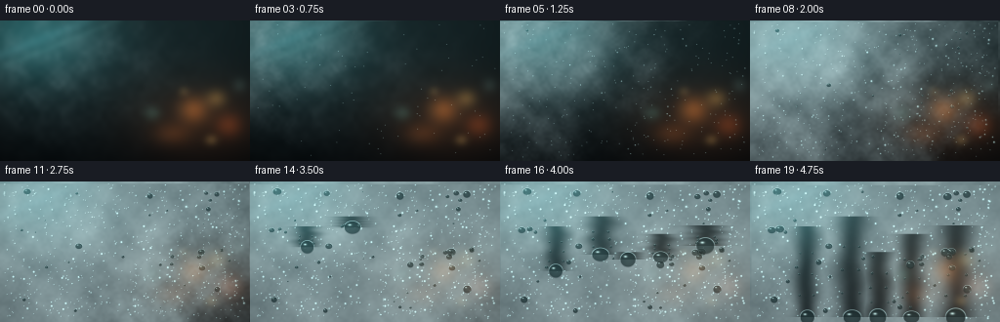
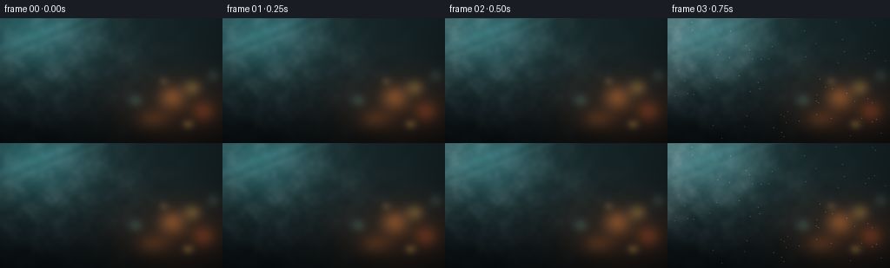
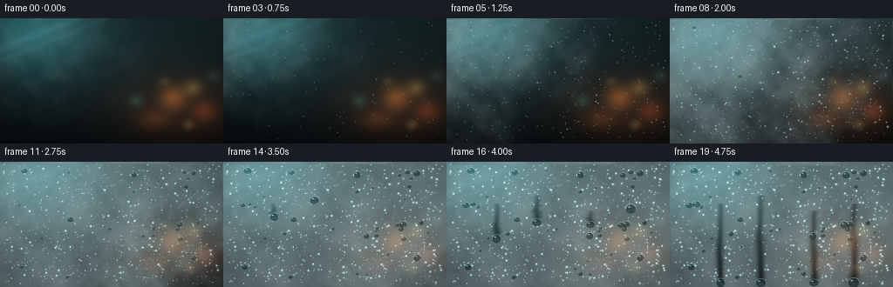
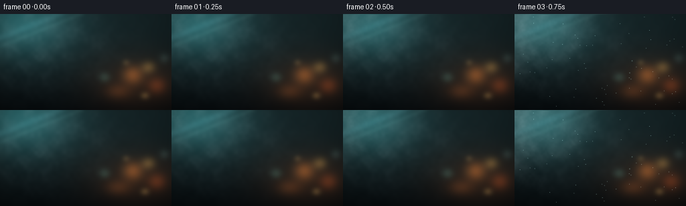

CODING AGENTS AS PIXEL WORLD MODELS
traex/DeepSeek-V4.1-Flash · phygen_111
点击播放 · 原生 RGB 像素
逐轮保存的候选
回放视频、检查图与代码变化。
每份候选均可单独播放。实际图片检查记录在下方工具轨迹中。
候选 01播放与检查图
点击播放 · 原生 RGB 像素


展开代码变化
--- 上一保存版本
+++ 本次保存版本
@@ -0,0 +1,341 @@
+from pathlib import Path
+import math
+
+import cv2
+import numpy as np
+
+import artifact_io
+
+
+HERE = Path(__file__).resolve().parent
+W, H, N, FPS = 256, 144, 20, 4.0
+SS = 4
+WW, HH = W * SS, H * SS
+SEED = 1409
+
+
+def smoothstep(edge0, edge1, value):
+ value = np.clip((value - edge0) / (edge1 - edge0), 0.0, 1.0)
+ return value * value * (3.0 - 2.0 * value)
+
+
+def scalar_smoothstep(edge0, edge1, value):
+ value = min(1.0, max(0.0, (value - edge0) / (edge1 - edge0)))
+ return value * value * (3.0 - 2.0 * value)
+
+
+def low_noise(rng, grid_w, grid_h, sigma=0.0):
+ field = rng.random((grid_h, grid_w), dtype=np.float32)
+ field = cv2.resize(field, (WW, HH), interpolation=cv2.INTER_CUBIC)
+ if sigma > 0:
+ field = cv2.GaussianBlur(field, (0, 0), sigma)
+ field -= field.min()
+ field /= max(float(field.max()), 1e-6)
+ return field
+
+
+def add_glow(image, cx, cy, sx, sy, color, strength):
+ y, x = np.mgrid[0:HH, 0:WW].astype(np.float32)
+ distance = ((x - cx * WW) / (sx * WW)) ** 2 + ((y - cy * HH) / (sy * HH)) ** 2
+ glow = np.exp(-distance).astype(np.float32)[..., None]
+ image += glow * np.asarray(color, dtype=np.float32) * strength
+
+
+def make_background():
+ y, x = np.mgrid[0:HH, 0:WW].astype(np.float32)
+ yn = y / (HH - 1)
+ xn = x / (WW - 1)
+
+ top = np.array([0.075, 0.135, 0.145], dtype=np.float32)
+ bottom = np.array([0.018, 0.035, 0.043], dtype=np.float32)
+ image = top[None, None, :] * (1.0 - yn[..., None]) + bottom[None, None, :] * yn[..., None]
+
+ # Cold window light from upper left and a warmer, distant city on the right.
+ add_glow(image, 0.12, 0.06, 0.30, 0.38, [0.11, 0.35, 0.36], 0.85)
+ add_glow(image, 0.82, 0.71, 0.30, 0.30, [0.22, 0.095, 0.035], 0.56)
+
+ bokeh = [
+ (0.775, 0.635, 0.055, 0.090, [0.92, 0.45, 0.13], 0.36),
+ (0.865, 0.555, 0.038, 0.058, [0.95, 0.68, 0.28], 0.27),
+ (0.915, 0.745, 0.050, 0.080, [0.80, 0.28, 0.08], 0.30),
+ (0.690, 0.805, 0.070, 0.075, [0.77, 0.34, 0.10], 0.20),
+ (0.610, 0.660, 0.030, 0.045, [0.40, 0.75, 0.65], 0.17),
+ (0.958, 0.460, 0.026, 0.046, [0.52, 0.75, 0.70], 0.14),
+ (0.845, 0.850, 0.022, 0.030, [1.00, 0.76, 0.38], 0.28),
+ (0.735, 0.505, 0.018, 0.025, [0.95, 0.70, 0.34], 0.18),
+ ]
+ for cx, cy, sx, sy, color, strength in bokeh:
+ add_glow(image, cx, cy, sx, sy, color, strength)
+
+ # A few soft reflected window strips make the transparent surface legible.
+ diagonal = 0.72 * xn + yn
+ strip1 = np.exp(-((diagonal - 0.25) / 0.035) ** 2).astype(np.float32)
+ strip2 = np.exp(-((diagonal - 0.34) / 0.014) ** 2).astype(np.float32)
+ image += strip1[..., None] * np.array([0.055, 0.090, 0.095], dtype=np.float32)
+ image += strip2[..., None] * np.array([0.065, 0.090, 0.085], dtype=np.float32)
+
+ image = cv2.GaussianBlur(image, (0, 0), 10.0)
+ vignette = 1.0 - 0.27 * (((xn - 0.5) / 0.72) ** 2 + ((yn - 0.5) / 0.76) ** 2)
+ image *= np.clip(vignette, 0.68, 1.0)[..., None]
+ return np.clip(image, 0.0, 1.0)
+
+
+def make_texture_fields(rng):
+ broad = low_noise(rng, 9, 6, 7.0)
+ medium = low_noise(rng, 28, 16, 2.4)
+ fine = low_noise(rng, 90, 52, 0.8)
+ texture = np.clip(0.56 * broad + 0.30 * medium + 0.14 * fine, 0.0, 1.0)
+
+ plume = low_noise(rng, 18, 10, 10.0)
+ plume_detail = low_noise(rng, 48, 28, 3.0)
+ plume = np.clip(0.70 * plume + 0.30 * plume_detail, 0.0, 1.0)
+ return texture.astype(np.float32), plume.astype(np.float32)
+
+
+def make_droplets(rng):
+ micro = []
+ for _ in range(760):
+ x = float(rng.uniform(0.018, 0.982))
+ y = float(rng.uniform(0.018, 0.982))
+ radius = float(1.55 + 4.7 * rng.random() ** 2.7)
+ birth = float(rng.uniform(2.0, 11.8))
+ growth = float(rng.uniform(5.0, 9.5))
+ micro.append((x, y, radius, birth, growth))
+
+ large = []
+ for _ in range(43):
+ x = float(rng.uniform(0.035, 0.965))
+ y = float(rng.uniform(0.045, 0.945))
+ radius = float(6.0 + 14.5 * rng.random() ** 1.8)
+ birth = float(rng.uniform(4.4, 13.5))
+ growth = float(rng.uniform(5.5, 9.0))
+ large.append((x, y, radius, birth, growth))
+
+ runners = [
+ (0.225, 0.365, 8.0, 12.0, 0.016, 0.7),
+ (0.405, 0.305, 10.0, 13.5, 0.018, 1.8),
+ (0.645, 0.425, 9.0, 14.5, 0.019, 2.4),
+ (0.825, 0.375, 11.0, 15.0, 0.022, 3.1),
+ (0.515, 0.555, 9.5, 16.0, 0.023, 4.0),
+ ]
+ return micro, large, runners
+
+
+def trail_masks(frame, runners):
+ union = np.zeros((HH, WW), dtype=np.float32)
+ rows = []
+ for index, (x0, y0, radius, start, drift, phase) in enumerate(runners):
+ if frame < start:
+ continue
+ progress = np.clip((frame - start) / (N - 1 - start), 0.0, 1.0)
+ progress = float(progress ** 1.42)
+ start_px = y0 * HH
+ end_px = (y0 + progress * (0.965 - y0)) * HH
+ x_center = (x0 + drift * progress * 0.018) * WW
+ width = radius * SS * 1.42
+ local = np.zeros((HH, WW), dtype=np.float32)
+ y_begin = int(max(0, start_px - radius * SS * 0.8))
+ y_end = int(min(HH - 1, end_px))
+ for y in range(y_begin, y_end + 1):
+ travel = (y - start_px) / max(end_px - start_px, 1.0)
+ wiggle = math.sin(travel * 7.0 + phase) * radius * SS * 0.12
+ wiggle += math.sin(travel * 17.0 + phase * 1.9) * radius * SS * 0.045
+ cx = x_center + wiggle
+ feather = width * (1.0 + 0.10 * math.sin(travel * 11.0 + phase))
+ x_distance = (np.arange(WW, dtype=np.float32) - cx) / feather
+ local[y] = np.exp(-(x_distance ** 2))
+ local = np.maximum(local, union * 0.30)
+ union = np.maximum(union, local)
+ rows.append((local, x_center, start_px, end_px, radius * SS, phase))
+ return np.clip(union, 0.0, 1.0), rows
+
+
+def fog_layer(frame, background, texture, plume, trail):
+ t = frame / (N - 1)
+ yn, xn = np.mgrid[0:HH, 0:WW].astype(np.float32)
+ xn /= WW - 1
+ yn /= HH - 1
+
+ shift_x = int(round(-16 + t * 22))
+ shift_y = int(round(t * 15))
+ texture_moving = np.roll(texture, shift=(shift_y, shift_x), axis=(0, 1))
+ plume_moving = np.roll(plume, shift=(int(round(t * 28)), int(round(-30 + t * 44))), axis=(0, 1))
+
+ wave = (t - 0.035) / 0.57 - 0.50 * xn - 0.27 * yn
+ wave += 0.22 * (texture_moving - 0.5)
+ arrival = smoothstep(-0.10, 0.58, wave)
+ condensation = arrival * (0.69 + 0.25 * texture_moving)
+ condensation *= 1.0 - 0.80 * trail
+
+ # Wisps remain visible while the first condensation front crosses the glass.
+ plume_envelope = np.exp(
+ -(((xn - 0.18 - 0.10 * t) / 0.44) ** 2 + ((yn - 0.27 - 0.12 * t) / 0.48) ** 2)
+ )
+ wisp = plume_envelope * (0.24 + 0.76 * plume_moving) ** 2
+ wisp *= 0.47 * (1.0 - smoothstep(0.10, 0.58, t))
+ wisp *= 1.0 - 0.52 * trail
+
+ fog_color = (
+ background * 0.17
+ + np.array([0.63, 0.73, 0.745], dtype=np.float32)[None, None, :]
+ + (texture_moving[..., None] - 0.5) * np.array([0.075, 0.068, 0.060], dtype=np.float32)
+ )
+ alpha = np.clip(0.88 * condensation + 0.52 * wisp, 0.0, 0.84)
+ out = background * (1.0 - alpha[..., None]) + fog_color * alpha[..., None]
+
+ # Thin, clear rivulets inside the widest trails catch the cold light.
+ out += (trail[..., None] * 0.030) * np.array([0.48, 0.72, 0.76], dtype=np.float32)
+ return np.clip(out, 0.0, 1.0), alpha
+
+
+def draw_micro_droplets(image, micro, frame, trail):
+ core = np.zeros((HH, WW), dtype=np.uint8)
+ highlight = np.zeros((HH, WW), dtype=np.uint8)
+ active_count = 0
+ for x, y, radius, birth, growth in micro:
+ if frame < birth:
+ continue
+ scale = 0.30 + 0.70 * scalar_smoothstep(birth, birth + growth, frame)
+ r = max(0.8, radius * scale)
+ cx = int(round(x * (WW - 1)))
+ cy = int(round(y * (HH - 1)))
+ if trail[min(max(cy, 0), HH - 1), min(max(cx, 0), WW - 1)] > 0.45:
+ continue
+ cv2.circle(core, (cx, cy), int(math.ceil(r)), 255, -1, cv2.LINE_AA)
+ hr = max(1, int(math.ceil(r * 0.43)))
+ cv2.circle(highlight, (cx - max(1, int(r * 0.27)), cy - max(1, int(r * 0.32))), hr, 255, -1, cv2.LINE_AA)
+ active_count += 1
+
+ if active_count == 0:
+ return image
+ core_f = cv2.GaussianBlur(core.astype(np.float32) / 255.0, (0, 0), 0.62)
+ highlight_f = cv2.GaussianBlur(highlight.astype(np.float32) / 255.0, (0, 0), 0.48)
+ shadow = np.roll(core_f, shift=(1, 1), axis=(0, 1))
+ image *= (1.0 - 0.14 * shadow[..., None])
+ image += core_f[..., None] * np.array([0.075, 0.105, 0.105], dtype=np.float32)
+ image += highlight_f[..., None] * np.array([0.34, 0.42, 0.42], dtype=np.float32)
+ return np.clip(image, 0.0, 1.0)
+
+
+def draw_droplet(image, background, cx, cy, radius, phase):
+ rx = radius
+ ry = radius * (0.86 + 0.12 * math.sin(phase * 2.1))
+ pad = int(math.ceil(max(rx, ry) * 1.55))
+ x0 = max(0, int(cx) - pad)
+ x1 = min(WW, int(cx) + pad + 1)
+ y0 = max(0, int(cy) - pad)
+ y1 = min(HH, int(cy) + pad + 1)
+ if x1 - x0 < 2 or y1 - y0 < 2:
+ return image
+
+ patch = image[y0:y1, x0:x1]
+ bg_patch = background[y0:y1, x0:x1]
+ yy, xx = np.mgrid[y0:y1, x0:x1].astype(np.float32)
+ nx = (xx - cx) / rx
+ ny = (yy - cy) / ry
+ ellipse = nx * nx + ny * ny
+ inside = np.clip((1.02 - ellipse) * 15.0, 0.0, 1.0)
+ core = np.clip((0.86 - ellipse) * 9.0, 0.0, 1.0)
+ rim = np.clip(inside - core, 0.0, 1.0)
+
+ refracted = np.roll(bg_patch, shift=(max(1, int(ry * 0.35)), max(1, int(rx * 0.08))), axis=(0, 1))
+ lens = refracted * 0.67 + np.array([0.055, 0.105, 0.110], dtype=np.float32)
+ lens += (1.0 - np.clip(ellipse, 0.0, 1.0))[..., None] * np.array([0.045, 0.060, 0.060], dtype=np.float32)
+ patch[:] = patch * (1.0 - 0.78 * core[..., None]) + lens * (0.78 * core[..., None])
+
+ top_light = np.clip((-ny + 0.30) * 1.15, 0.0, 1.0)
+ bottom_shadow = np.clip((ny - 0.08) * 1.05, 0.0, 1.0)
+ patch += rim[..., None] * (
+ np.array([0.33, 0.42, 0.42], dtype=np.float32) * top_light[..., None]
+ - np.array([0.10, 0.11, 0.105], dtype=np.float32) * bottom_shadow[..., None]
+ )
+
+ spec_x = cx - rx * 0.30
+ spec_y = cy - ry * 0.38
+ spec_sigma_x = max(1.0, rx * 0.19)
+ spec_sigma_y = max(0.8, ry * 0.12)
+ spec = np.exp(-(((xx - spec_x) / spec_sigma_x) ** 2 + ((yy - spec_y) / spec_sigma_y) ** 2))
+ patch += spec[..., None] * np.array([0.64, 0.74, 0.72], dtype=np.float32)
+ image[y0:y1, x0:x1] = patch
+ return np.clip(image, 0.0, 1.0)
+
+
+def add_runner_beads(image, background, frame, rows):
+ for index, (local, x_center, start_px, end_px, radius, phase) in enumerate(rows):
+ if end_px <= start_px + 3:
+ continue
+ # Small beads collect along the trail shoulders.
+ for side in (-1.0, 1.0):
+ for j in range(3):
+ y = start_px + (end_px - start_px) * (0.24 + 0.25 * j)
+ x = x_center + side * radius * (0.78 + 0.06 * j)
+ x += math.sin(y * 0.041 + phase + j) * radius * 0.10
+ r = radius * (0.13 + 0.025 * ((j + index) % 3))
+ image = draw_droplet(image, background, x, y, r, phase + j)
+ return image
+
+
+def render(frame):
+ rng = np.random.default_rng(SEED)
+ background = make_background()
+ texture, plume = make_texture_fields(rng)
+ micro, large, runners = make_droplets(rng)
+
+ trail, rows = trail_masks(frame, runners)
+ image, _ = fog_layer(frame, background, texture, plume, trail)
+ image = draw_micro_droplets(image, micro, frame, trail)
+
+ for index, (x, y, radius, birth, growth) in enumerate(large):
+ if frame < birth:
+ continue
+ scale = 0.32 + 0.68 * scalar_smoothstep(birth, birth + growth, frame)
+ r = radius * scale
+ image = draw_droplet(image, background, x * WW, y * HH, r, index * 0.71)
+
+ for index, (x0, y0, radius, start, drift, phase) in enumerate(runners):
+ if frame < start:
+ continue
+ progress = np.clip((frame - start) / (N - 1 - start), 0.0, 1.0)
+ eased = float(progress ** 1.42)
+ cx = (x0 + drift * eased * 0.018) * WW
+ cy = (y0 + eased * (0.965 - y0)) * HH
+ cx += math.sin(eased * 7.0 + phase) * radius * SS * 0.12
+ radius_px = radius * SS * (0.90 + 0.10 * smoothstep(0.0, 1.0, progress))
+ image = draw_droplet(image, background, cx, cy, radius_px, phase)
+
+ image = add_runner_beads(image, background, frame, rows)
+
+ # Optical bloom from the wet highlights, then a restrained macro-photo grade.
+ luminance = image.max(axis=2)
+ bloom_source = np.clip((luminance - 0.61) / 0.39, 0.0, 1.0)
+ bloom = cv2.GaussianBlur(bloom_source, (0, 0), 9.0)
+ image += bloom[..., None] * np.array([0.085, 0.11, 0.105], dtype=np.float32)
+
+ y, x = np.mgrid[0:HH, 0:WW].astype(np.float32)
+ edge_vignette = 1.0 - 0.20 * (((x / WW - 0.5) / 0.70) ** 4 + ((y / HH - 0.5) / 0.74) ** 4)
+ image *= np.clip(edge_vignette, 0.74, 1.0)[..., None]
+ image = np.clip(image, 0.0, 1.0)
+ image = np.power(image, 0.94)
+ image *= 255.0
+
+ output = cv2.resize(image, (W, H), interpolation=cv2.INTER_AREA)
+ output = np.clip(output + 0.5, 0, 255).astype(np.uint8)
+ return output
+
+
+def main():
+ frames = np.stack([render(frame) for frame in range(N)], axis=0)
+ artifact_io.save(frames, HERE)
+
+ # The browser artifact is canonical; an MP4 is also useful for direct viewing.
+ try:
+ import imageio.v2 as imageio
+
+ imageio.mimsave(HERE / "video.mp4", frames, fps=FPS, codec="libx264", quality=8)
+ except Exception as exc:
+ print(f"MP4 export skipped: {exc}")
+ print(f"generated {frames.shape} RGB frames")
+
+
+if __name__ == "__main__":
+ main()
候选 02播放与检查图
点击播放 · 原生 RGB 像素


展开代码变化
--- 上一保存版本
+++ 本次保存版本
@@ -112,11 +112,10 @@
large.append((x, y, radius, birth, growth))
runners = [
- (0.225, 0.365, 8.0, 12.0, 0.016, 0.7),
- (0.405, 0.305, 10.0, 13.5, 0.018, 1.8),
- (0.645, 0.425, 9.0, 14.5, 0.019, 2.4),
- (0.825, 0.375, 11.0, 15.0, 0.022, 3.1),
- (0.515, 0.555, 9.5, 16.0, 0.023, 4.0),
+ (0.225, 0.365, 5.6, 12.5, 0.016, 0.7),
+ (0.405, 0.305, 6.4, 14.0, 0.018, 1.8),
+ (0.645, 0.425, 6.0, 15.0, 0.019, 2.4),
+ (0.825, 0.375, 7.0, 16.0, 0.022, 3.1),
]
return micro, large, runners
@@ -132,7 +131,7 @@
start_px = y0 * HH
end_px = (y0 + progress * (0.965 - y0)) * HH
x_center = (x0 + drift * progress * 0.018) * WW
- width = radius * SS * 1.42
+ width = radius * SS * 0.76
local = np.zeros((HH, WW), dtype=np.float32)
y_begin = int(max(0, start_px - radius * SS * 0.8))
y_end = int(min(HH - 1, end_px))
@@ -141,10 +140,11 @@
wiggle = math.sin(travel * 7.0 + phase) * radius * SS * 0.12
wiggle += math.sin(travel * 17.0 + phase * 1.9) * radius * SS * 0.045
cx = x_center + wiggle
- feather = width * (1.0 + 0.10 * math.sin(travel * 11.0 + phase))
+ feather = width * (0.72 + 0.28 * travel)
+ feather *= 1.0 + 0.13 * math.sin(travel * 11.0 + phase)
x_distance = (np.arange(WW, dtype=np.float32) - cx) / feather
- local[y] = np.exp(-(x_distance ** 2))
- local = np.maximum(local, union * 0.30)
+ local[y] = np.exp(-(x_distance ** 2)) * (0.55 + 0.45 * travel)
+ local = np.maximum(local, union * 0.14)
union = np.maximum(union, local)
rows.append((local, x_center, start_px, end_px, radius * SS, phase))
return np.clip(union, 0.0, 1.0), rows
@@ -164,27 +164,27 @@
wave = (t - 0.035) / 0.57 - 0.50 * xn - 0.27 * yn
wave += 0.22 * (texture_moving - 0.5)
arrival = smoothstep(-0.10, 0.58, wave)
- condensation = arrival * (0.69 + 0.25 * texture_moving)
- condensation *= 1.0 - 0.80 * trail
+ condensation = arrival * (0.49 + 0.20 * texture_moving)
+ condensation *= 1.0 - 0.86 * trail
# Wisps remain visible while the first condensation front crosses the glass.
plume_envelope = np.exp(
-(((xn - 0.18 - 0.10 * t) / 0.44) ** 2 + ((yn - 0.27 - 0.12 * t) / 0.48) ** 2)
)
wisp = plume_envelope * (0.24 + 0.76 * plume_moving) ** 2
- wisp *= 0.47 * (1.0 - smoothstep(0.10, 0.58, t))
- wisp *= 1.0 - 0.52 * trail
+ wisp *= 0.34 * (1.0 - smoothstep(0.10, 0.58, t))
+ wisp *= 1.0 - 0.68 * trail
fog_color = (
background * 0.17
+ np.array([0.63, 0.73, 0.745], dtype=np.float32)[None, None, :]
+ (texture_moving[..., None] - 0.5) * np.array([0.075, 0.068, 0.060], dtype=np.float32)
)
- alpha = np.clip(0.88 * condensation + 0.52 * wisp, 0.0, 0.84)
+ alpha = np.clip(0.88 * condensation + 0.44 * wisp, 0.0, 0.64)
out = background * (1.0 - alpha[..., None]) + fog_color * alpha[..., None]
# Thin, clear rivulets inside the widest trails catch the cold light.
- out += (trail[..., None] * 0.030) * np.array([0.48, 0.72, 0.76], dtype=np.float32)
+ out += (trail[..., None] * 0.018) * np.array([0.48, 0.72, 0.76], dtype=np.float32)
return np.clip(out, 0.0, 1.0), alpha
@@ -201,19 +201,19 @@
cy = int(round(y * (HH - 1)))
if trail[min(max(cy, 0), HH - 1), min(max(cx, 0), WW - 1)] > 0.45:
continue
- cv2.circle(core, (cx, cy), int(math.ceil(r)), 255, -1, cv2.LINE_AA)
+ cv2.circle(core, (cx, cy), int(math.ceil(r * 1.12)), 255, -1, cv2.LINE_AA)
hr = max(1, int(math.ceil(r * 0.43)))
cv2.circle(highlight, (cx - max(1, int(r * 0.27)), cy - max(1, int(r * 0.32))), hr, 255, -1, cv2.LINE_AA)
active_count += 1
if active_count == 0:
return image
- core_f = cv2.GaussianBlur(core.astype(np.float32) / 255.0, (0, 0), 0.62)
+ core_f = cv2.GaussianBlur(core.astype(np.float32) / 255.0, (0, 0), 0.52)
highlight_f = cv2.GaussianBlur(highlight.astype(np.float32) / 255.0, (0, 0), 0.48)
shadow = np.roll(core_f, shift=(1, 1), axis=(0, 1))
image *= (1.0 - 0.14 * shadow[..., None])
- image += core_f[..., None] * np.array([0.075, 0.105, 0.105], dtype=np.float32)
- image += highlight_f[..., None] * np.array([0.34, 0.42, 0.42], dtype=np.float32)
+ image += core_f[..., None] * np.array([0.105, 0.145, 0.145], dtype=np.float32)
+ image += highlight_f[..., None] * np.array([0.42, 0.51, 0.50], dtype=np.float32)
return np.clip(image, 0.0, 1.0)
可观测工具轨迹
实际执行的命令与返回图片。
命令 1exit 0
/bin/bash -c "pwd && rg --files -g 'prompt.txt' -g 'GENERATION_RULES.md' -g 'task_spec.json' -g '"'!*.mp4'"'"
命令 2exit 0
/bin/bash -c 'ls -la'
命令 3exit 0
/bin/bash -c 'cat GENERATION_RULES.md'
命令 4exit 0
/bin/bash -c "sed -n '1,240p' artifact_io.py"
命令 5exit 0
/bin/bash -c "sed -n '1,240p' player_template.html"
命令 6exit 0
/bin/bash -c 'cat task_spec.json'
命令 7exit 0
/bin/bash -c 'cat prompt.txt'
命令 8exit 0
/bin/bash -c "python - <<'PY'
import numpy, PIL
print('numpy', numpy.__version__)
print('PIL', PIL.__version__)
try:
import scipy
print('scipy', scipy.__version__)
except Exception as e:
print('scipy unavailable', e)
PY"命令 9exit 0
/bin/bash -c 'ffmpeg -version | head -n 3'
命令 10exit 0
/bin/bash -c 'command -v chafa || command -v viu || command -v img2txt || true'
命令 11exit 0
/bin/bash -c "python - <<'PY' mods=['imageio','imageio_ffmpeg','cv2','av','matplotlib','skimage'] for m in mods: try: mod=__import__(m) print(m, getattr(mod,'__version__','ok')) except Exception as e: print(m, 'unavailable', type(e).__name__, e) PY"
命令 12exit 0
/bin/bash -c 'MPLCONFIGDIR=.tmp/mpl python generate.py'
命令 13exit 0
/bin/bash -c "python - <<'PY'
from pathlib import Path
from PIL import Image
import numpy as np
root=Path('.')
files=sorted((root/'frames').glob('*.png'))
arr=np.stack([np.asarray(Image.open(f)) for f in files])
print('artifacts:', [(p.name,p.stat().st_size) for p in [root/'index.html',root/'pixels.npz',root/'video.mp4',root/'inspection.png']])
print('shape',arr.shape)
for i in [0,1,2,4,8,12,16,19]:
a=arr[i].astype(float)
print(i,'mean',np.round(a.mean((0,1)),1),'std',round(a.std(),1),'p01/99',np.percentile(a,[1,99]).round(1),'edges',round(np.abs(np.diff(a.mean(2),axis=0)).mean(),2))
print('frame delta means', np.round(np.abs(np.diff(arr.astype(float),axis=0)).mean((1,2,3)),2))
PY"命令 14exit 0
/bin/bash -c "python - <<'PY'
from PIL import Image
import numpy as np
chars=' .:-=+*#%@'
for fi in [0,4,8,12,16,19]:
im=Image.open(f'frames/{fi:02d}.png').convert('L').resize((64,28), Image.Resampling.LANCZOS)
a=np.asarray(im)
print(f'\\nFRAME {fi}')
for row in a:
print(''.join(chars[min(9,int(v)*10//256)] for v in row))
PY"命令 15exit 0
/bin/bash -c 'mkdir -p candidates/v1 && cp -r frames inspection.png transition_check.png pixels.npz index.html video.mp4 candidates/v1/'
命令 16exit 0
/bin/bash -c 'MPLCONFIGDIR=.tmp/mpl python generate.py'
命令 17exit 0
/bin/bash -c "python - <<'PY'
from PIL import Image
import numpy as np
chars=' .:-=+*#%@'
arr=np.stack([np.asarray(Image.open(f'frames/{i:02d}.png')) for i in [0,4,8,12,16,19]])
for j,fi in enumerate([0,4,8,12,16,19]):
im=Image.fromarray(arr[j]).convert('L').resize((64,28), Image.Resampling.LANCZOS)
a=np.asarray(im)
print(f'\\nFRAME {fi}')
for row in a:
print(''.join(chars[min(9,int(v)*10//256)] for v in row))
PY"命令 18exit 0
/bin/bash -c "python - <<'PY'
from pathlib import Path
s=Path('index.html').read_text()
print('html bytes',len(s.encode()),'has_data', '__DATA__' not in s,'frames20', '\"frames\":20' in s,'fps4','\"fps\":4.0' in s,'deltas19',s.count('\"deltas\"'))
PY"命令 19exit 0
/bin/bash -c "python - <<'PY'
from pathlib import Path
import numpy as np
from PIL import Image
p=np.load('pixels.npz')['pixels']
imgs=np.stack([np.asarray(Image.open(f'frames/{i:02d}.png')) for i in range(20)])
packed=(imgs[:,:,:,0].astype(np.uint32)<<16)|(imgs[:,:,:,1].astype(np.uint32)<<8)|imgs[:,:,:,2]
print('pixels',p.shape,p.dtype,'matches_png',np.array_equal(p,packed.transpose(1,2,0)))
print('frame_unique',len(np.unique(p)))
for i in [0,4,8,12,16,19]:
a=imgs[i].astype(float)
print(i,'mean',np.round(a.mean((0,1)),1),'std',round(float(a.std()),1),'p01,p50,p99',np.percentile(a,[1,50,99]).round(1))
print('delta',np.round(np.abs(np.diff(imgs.astype(float),axis=0)).mean((1,2,3)),2))
PY"命令 20exit 1
/bin/bash -c "python - <<'PY'
import imageio.v2 as imageio
r=imageio.get_reader('video.mp4')
m=r.get_meta_data()
frames=list(r)
print('meta', {k:m[k] for k in ('fps','duration','size','codec') if k in m})
print('decoded',len(frames),frames[0].shape,frames[-1].shape)
PY"命令 21exit 0
/bin/bash -c "python - <<'PY'
import cv2
cap=cv2.VideoCapture('video.mp4')
print('opened',cap.isOpened(),'frames',int(cap.get(cv2.CAP_PROP_FRAME_COUNT)),'fps',cap.get(cv2.CAP_PROP_FPS),'size',int(cap.get(cv2.CAP_PROP_FRAME_WIDTH)),int(cap.get(cv2.CAP_PROP_FRAME_HEIGHT)))
count=0
while True:
ok,frame=cap.read()
if not ok: break
count+=1
print('decoded',count)
cap.release()
PY"命令 22exit 0
/bin/bash -c "find . -maxdepth 2 -type d -printf '%p\\n' | sort && find . -maxdepth 1 -type f -printf '%f %s\\n' | sort"
命令 23exit 0
/bin/bash -c 'mkdir -p candidates/v2 && cp -r frames inspection.png transition_check.png pixels.npz index.html video.mp4 candidates/v2/'
命令 24exit 0
/bin/bash -c "python - <<'PY'
from pathlib import Path
import hashlib
for p in sorted(Path('frames').glob('*.png')):
print(p.name, hashlib.sha256(p.read_bytes()).hexdigest()[:12])
PY"命令 25exit 0
/bin/bash -c 'MPLCONFIGDIR=.tmp/mpl python generate.py'
命令 26exit 0
/bin/bash -c "python - <<'PY'
from pathlib import Path
import hashlib
for p in sorted(Path('frames').glob('*.png')):
print(p.name, hashlib.sha256(p.read_bytes()).hexdigest()[:12])
PY"命令 27exit 0
/bin/bash -c 'find __pycache__ -type f -delete 2>/dev/null; rmdir __pycache__ 2>/dev/null || true; ls -lh index.html video.mp4 pixels.npz inspection.png transition_check.png generate.py'
保存候选 2 份；完成命令 27 次；可验证图片返回 0 张。原始 API 响应与完整日志保留在本地。